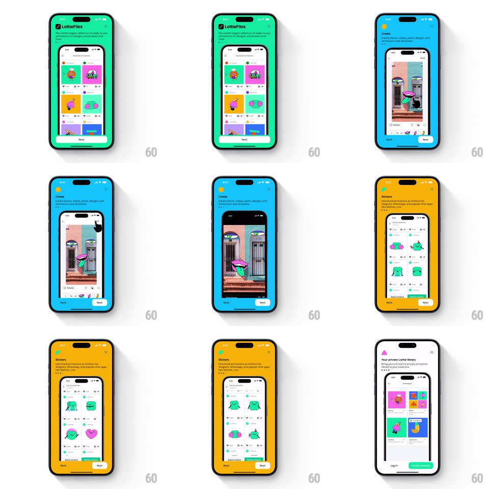

Media
Frame-by-frame

Rebuild this interaction 1:1: LottieFiles' value-prop onboarding - each page is a full-bleed saturated background (mint green, cyan blue, amber yellow, white) with a floating phone mock running a live feature preview (animation grid, AR-style camera sticker, sticker picker, private library) while the page color, copy, and device content swipe as one.

Rebuild this interaction 1:1: LottieFiles' value-prop onboarding - each page is a full-bleed saturated background (mint green, cyan blue, amber yellow, white) with a floating phone mock running a live feature preview (animation grid, AR-style camera sticker, sticker picker, private library) while the page color, copy, and device content swipe as one. ## Integration Integration: stack-agnostic spec - springs given as stiffness/damping, timed motions as duration + curve; map every value to your framework and animation library of choice. ## Scene Full-screen colored pages: LottieFiles logo + feature title + one-line copy top-left, X close top-right, a large phone mock tilted slightly and bleeding off the bottom edge showing the feature, Back / Next pills at the bottom. ## Motion spec Pattern: paged carousel with background color flood and device-content parallax. - Swipe: background color interpolates continuously between the two pages' hues with drag position; copy slides horizontally with the finger 1:1. - The phone mock moves at ~0.7x drag speed (parallax against the copy) and rotates a few degrees into the turn (rotateZ +/-4deg, spring ~340/24 on release). - Release past halfway: page completes on a spring (~360/26, 380ms) - color flood finishes, new copy settles, device swings upright with a small overshoot. - Inside the device mock, the feature preview keeps animating (grid items pop, sticker bounces) - the mock is a live scene, not a screenshot. - Page dots / Back-Next update on settle; Back is hidden on page one. ## Calibration - Color, copy, device rotation, and device parallax all read from one drag-progress value. - Each page's background is fully saturated and flat - no gradients, letting the white device frame pop. ## Reduced motion Pages crossfade (300ms); device stays upright. ## Don't miss - The device bleeds off the bottom edge - it is cropped by the screen, never fully contained. - The final page (white background, Log in / Get started buttons) breaks the color pattern deliberately.